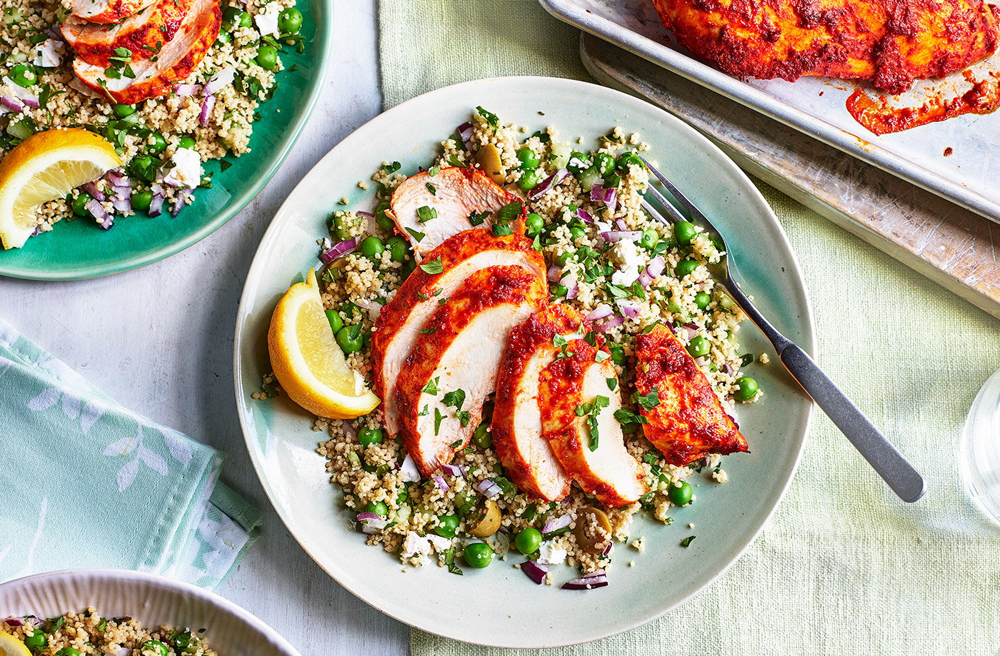

Recipes
Chicken CousCous

Description
Chicken couscous is a versatile dish that combines spiced chicken and
vegetables with light, fluffy couscous, often a quick-cooking pasta made
from durum wheat.
Ingredients
1 tbsp. curry paste
1 tbsp. mango chutney
½ tsp. turmeric
Salt to taste
50ml olive oil
4 chicken breast
300g couscous
350ml vegetable stock
Method
-
Firstly, make a marinade for your chicken by adding the curry paste,
chutney, turmeric, salt and olive oil to a bowl and mixing well.
-
Then, cut each chicken breast in half and add to the marinade, stirring
until well covered, and then leave aside for at least 20 minutes —
ideally in the fridge overnight.
-
Next, heat a grill pan over medium heat and lay out your chicken pieces.
Grill for 5-6 minutes on each side, or until golden and slightly
charred.
-
Meanwhile, place the couscous in a big bowl and carefully pour in the
boiling vegetable stock. Cover the bowl with a lid and leave to soak for
around 5 minutes, then fluff your couscous with a fork and add any
extras you want — pomegranate seeds are great for a flash of colour and
burst of flavour.
-
Finally, divide your couscous into 4 containers, top with two pieces of
marinated chicken and finish with a sprinkle of coriander.
Macros
calories: ~508 kcal
Fat: ~20g
Carbohydrates: ~39g
Protein: ~66g
Tips
You can use extra ingredients such as Pomegranate seeds and coriander